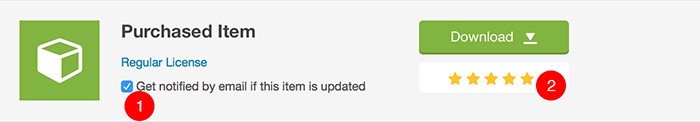
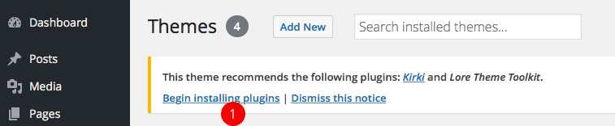

Introduction
Thank you for your purchasing Lore theme!
Please note, that this documentation doesn’t cover WordPress basics too extensively, so if you are new to WordPress, we highly recommend you to read through some beginner tutorials first.
If you are already loving Lore theme, please don’t forget to rate it 5 stars under your downloads section of your ThemeForest profile. Thank you!
Theme Installation
Once you’ve successfully installed WordPress, let’s proceed to the installation of the theme itself.
Downloading The Package
If you haven’t already, download the full package from your downloads on ThemeForest
- Click on Download button next to purchased item
- Choose All files & documentation and download the zip file

- Enable email notifications if you want to be informed when the new update is available
- If you like the theme, don't forget to rate it 5* please. Thank you!
When you unzip the downloaded file, you will see bunch of folders. The most important one is the THEME folder which contains the installable theme .ZIP.
- THEME folder contains the installable theme .ZIP
Installing the Theme
Open your WordPress admin and navigate to Appearance / Themes
- You can manage themes under Appearance / Themes
Upload the installable theme .ZIP file
- Click on Add New button
- Click on Upload Theme button
- Choose theme .ZIP file
- Submit the file
Child Theme Installation
If you don’t know what a WordPress child theme is, please read this article in WordPress codex.
This documentation assume that you are running the child theme, so it is highly recommended to install it. Child theme .ZIP can be found in Child Theme folder. Install it in exactly the same way as parent theme, described in previous steps.
Once you have both parent and child themes installed, you need to activate the child one.
Plugins Installation
Once you’ve activated the theme, you should see a prompt message at the top of your admin informing you about required plugins.

- Click on Begin installing plugins
- Select all plugins
- Choose Install
- Hit Apply
- Wait for plugins to be installed and then click on Return to Required Plugins installer
- Select all plugins
- Choose Activate
- Hit Apply
That’s it. Required plugins should be now installed and activated.
Here is the list of required plugins if you are unable to see the prompt (for example if you’ve accidentally dismissed it):
Lore Theme Toolkit
This plugin contains lots of theme’s features, like custom post types, shortcodes and widgets. The plugin .zip can be found in full package in Plugins folder if you need to install it manually.
Kirki
Adds theme options into Customizer.
Demo Data Import
Demo data are distributed via a separate file (lore-demo.xml), which can be found in theme’s full package (read the Theme Installation chapter to learn how to download the full package) in Demo Data folder.
To import the demo data, navigate to Tools / Import and click on WordPress. You may be prompted to install the Importer plugin if you don’t have it already. After you install and activate it, go again to Tools / Import / WordPress, choose lore-demo.xml file from Demo Data folder in full package and submit it.
Content Editing
Standard Blog Post
Before you start adding your blog (news) posts, go to Settings / Reading and set your Posts page.
- Select A static page
- Choose your Front page
- Choose your Posts page
Since the blog posts are a core WordPress feature, you can read more about them in WordPress Codex.
Knowledge Base
Knowledge Base is a bread and butter of this theme. Working with Knowledge base articles is very similar to working with regular posts. Each article can be assigned to a category and can include several tags.
You can manage your Knowledge Base articles under Knowledge Base section of admin. To set category icon, use Category Icon field when creating or editing a category. Read Icons chapter to learn more about using icons.
By default, your Knowledge Base page is accessible on yoursite.com/knowledge-base URL (make sure to set your Settings / Permalinks to Post name). You can change the knowledge-base slug of the URL under Appearance / Customize / Knowledge Base. Don’t forget to resave Settings / Permalinks after you change slugs.
You can use [lore_kb_articles] shortcode to insert Knowledge Base articles list to any page. There are also bunch of Knowledge Base specific widgets (Lore Knowledge Base Articles and Lore Knowledge Base Categories) you can assign to any sidebar under Appearance / Widgets.
FAQ
Same as for Knowledge Base articles, working with FAQ posts is very similar to working with regular posts. You can put them to categories and assign them tags.
FAQ posts can be managed under FAQ section of admin.
By default, your FAQ archive page is accessible on yoursite.com/faq URL (make sure to set your Settings / Permalinks to Post name). You can change the faq slug of the URL under Appearance / Customize / FAQ. Don’t forget to resave Settings / Permalinks after you change slugs.
You can use [lore_faq] shortcode to insert FAQ list to any page. There are also bunch of FAQ specific widgets (Lore FAQ Posts and Lore FAQ Categories) you can assign to any sidebar under Appearance / Widgets.
Customization
Customizer
This theme fully supports default WordPress Customizer (with help from Kirki plugin). You can access it via Appearance / Customize, where you can edit almost every aspect of the theme like menus, sidebars and widgets, header logo and much, much more.
Sidebars & Widgets
Sidebars and widgets can be managed under Appearance / Widgets. Lore comes with bunch of custom widgets (their name is prefixed with “Lore”) and several sidebars. Please read the description of each sidebar to learn more about it.
Custom Sidebars
Lore offers several custom sidebars. You can change their number under Appearance / Customize / Misc Settings with Number of Custom Sidebars option.
Custom sidebars can be assigned to regular pages with Sidebar on the Left or Sidebar on the Right page templates.
- Choose Sidebar on the Left or Sidebar on the Right template
- Choose which sidebar should be used
Color Scheme
There are multiple ways how to change colors of this theme. Color schemes can be managed under Appearance / Customize / Color Scheme.
Predefined Color Scheme
Choose one of predefined color schemes.
Pick Colors
Here you can pick link and accent colors and the color scheme will be generated automatically based on those two colors.
Paste Generated CSS
- Open default color scheme .scss file. It should open directly in your browser, but some browsers may download it on your disk instead.
- Copy all the code from that link to any text editor. If your browser downloaded your file, open that file in the text editor. You can use for example Notepad++ for Windows or Brackets for Mac.
- Make your changes. Basically you just need to change color variables at the top of the file. Most prominent is the $accent variable on line 27. By default, it looks like this:
$accent: #74aa7b; // main accent color
There are many online tools where you can generate a hex code for your color, for example colorpicker.com. Just change #74aa7b to hex code of your custom color (don’t forget that it has to start with # sign). Feel free to change values of other color variables in the file as well.
- Copy your changed code and paste it to the left column on sassmeister.com (SCSS). Please note that any typo in your syntax may lead into an error when generating your CSS code. So double check code in your file when there is any issue converting your SASS into CSS.
- Copy generated code from right column (CSS)
- Paste this generated code under Appearance / Customize into Generated CSS field (Color Scheme Source has to be set to Paste Generated CSS for this field to be visible).
Load From Child Theme
Follow the steps as described above (in Paste Generated CSS), but there is a change in the last step. Instead of pasting your code in Customizer, paste it into child theme style.css. You can access this file either via FTP, or directly in admin under Appearance / Editor.
How To
Front Page
There are multiple ways how to create a front page. If you want to build your custom one, without any attachments to the demo front page, then just create a regular page, fill it with the content and set it under Settings / Reading as your Front page. Don’t forget you can use Shortcode Generator if you want to use theme’s built-in shortcodes.
But what if you want to use the same or similar front page as you can see in the demo? Let’s follow next steps to learn how to do it.
Create a Regular Page
If you’ve imported the demo content you can skip this step as you already have this page (it’s called Knowledge Base. Elegant. Lightweight. WordPress Based.).
For those who are building their site from the scratch, go to Pages and create a new page with page template set to Default Front Page.
- Create a new page
- Insert a title which will be displayed at the top of the page
- Content will be displayed under pre-defined layout of Default Front Page template (we will get to that in a moment)
- Set page tempalte to Default Front Page
- You can override global header background image with page’s Featured image
- Save the page
Set Your Page as a Front Page
Go to Settings / Reading and set the page from previous step as Front page.
- Select A static page
- Choose your Front page
- Choose your Posts page
Configure Your Front Page
You can configure your front page under Appearance / Customize / Default Front Page Settings (those settings will work only if your front page uses Default Front Page template as described in one of previous steps). All options there should be self-explanatory via their description.
Theme Translation
The easiest way to translate the theme is to use Loco Translate plugin. Remember that you have to translate both Lore theme and Lore Theme Toolkit plugin.
If you are using the child theme (which you definitely should!), Loco translate will give you an option to create your language file for both parent (Lore) and child (Lore Child) themes. Ignore the Lore theme and create it for Lore Child theme only, so you won’t lose your translations after you update the theme in the future.
If you want to run your site in multiple languages, you can use WPML plugin for that (it is not free though).
There is also an old-fashioned way to create your translation via Poedit app. You will find the source lore.pot file in theme’s languages folder.
Updating the Theme
To update the theme, simply download it again from your downloads on ThemeForest (download just Installable WordPress file only). Latest version will be downloaded. Then deactivate and remove your current version of parent theme (you may need to activate another theme to be able to see an option for deleting your current theme) and install the downloaded version. You won’t lose your changes you made in admin.
Alternatively, you can update the theme by overwriting the Lore folder in wp-content/themes via FTP.
You should update the parent theme (Lore) only. There is no need for updating the child theme (Lore Child).
Icons
This theme comes with custom icon font family which contains icons handpicked from several icon libraries (FontAwesome, Google Material Icons, Nova icons). Icon family was created via IcoMoon app.
List of bundled FontAwesome Icons
List of bundled Nova Icons (Loreicons)
There are multiple fields across the theme where you can insert the icon name. To do so prefix the icon’s name from the list with additional "loreico". For example "loreico loreico-heart" (without quotes).
Excerpt
You can set an excerpt for regular posts, Knowledge Base articles and FAQ posts. This text will be used in listing pages, widgets and shortcodes where applicable.
To define an excerpt, first make sure you have it enabled. To do so, click on Screen Options in upper right corner of post edit screen and check Excerpt.
- Click on Screen Options
- Check Excerpt
Then scroll down and you should see an Excerpt field.
- Put your excerpt here
Contact Form
Contact Form 7 is the recommended plugin for contact form functionality. Please check out its official site if you need any help on how to use this plugin.
The following code is the form template used in the demo. Insert it under Contact / <your-contact-form> / Form if you want to make your own form look like the one in the demo.
[response] <div class="row"> <div class="col-md-6"> <label>[text your-subject placeholder "Subject"]</label> <label>[text* your-name placeholder "Your Name (required)"]</label> <label>[email* your-email placeholder "Your Email (required)"]</label> </div> <div class="col-md-6"> <label>[textarea your-message x7 placeholder "Your Message"]</label> </div> </div> <div class="text-align-center">[submit class:c-button "Send Message"]</div>
Forum (bbPress)
This theme supports bbPress plugin, which is the most popular solution for a WordPress based forum. Support comes in a form of custom CSS styling for bbPress pages and small code tweaks for seamless integration. Also, there is a pre-defined page template for bbPress Login/Registration. Just create a regular page and set its Template (under Page Attributes) to bbPress Login / Register.
bbPress has its own extensive documentation which should get you started.
Shortcode Generator
Shortcodes are small pieces of code which can be used to include various elements into content of your site. This theme offers several custom shortcodes, which can be inserted very easily via Shortcode Generator.
- Click on Add Shortcode button
- Choose shortcode from the list
- Customize its parameters
- You can copy the generated code to clipboard
- Insert shortcode into content